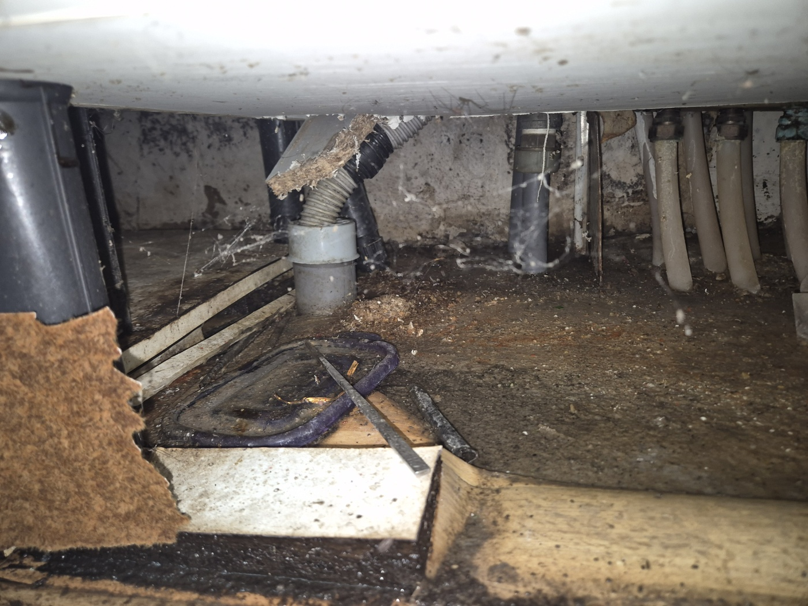
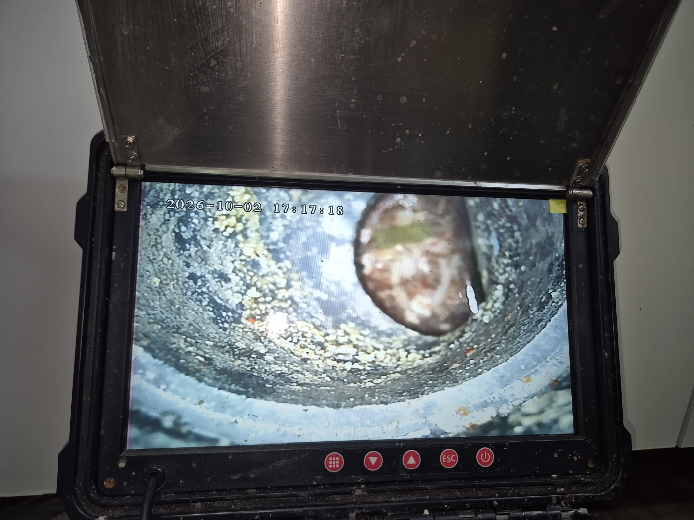
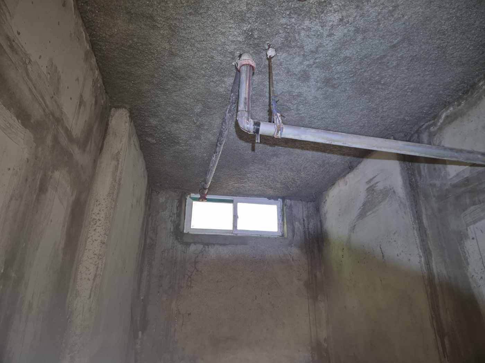
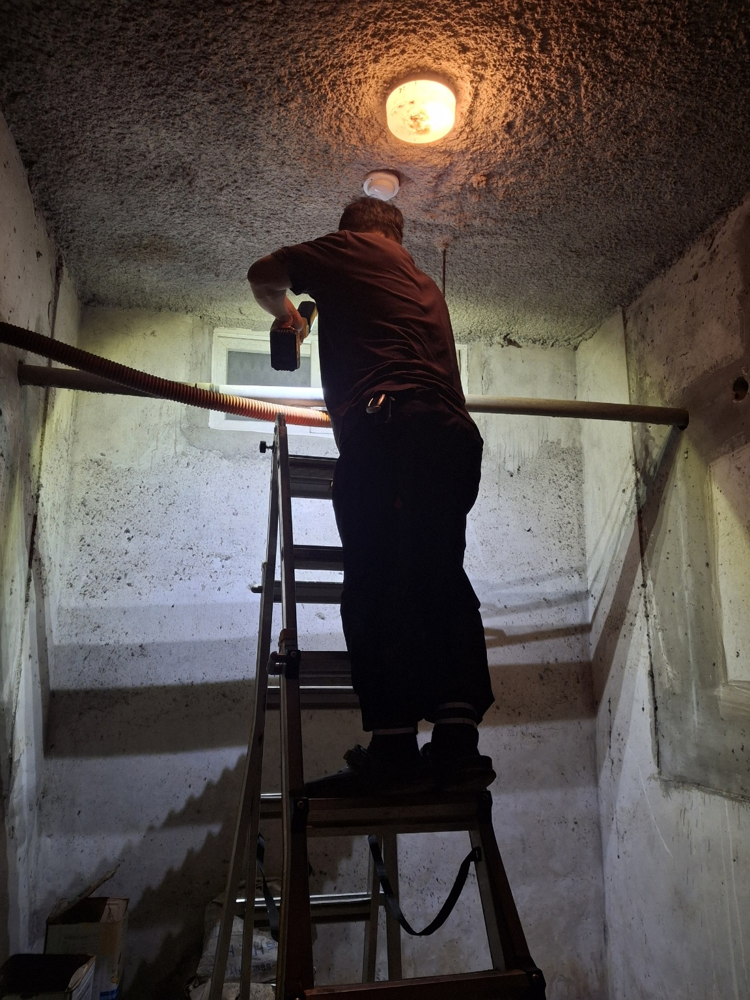
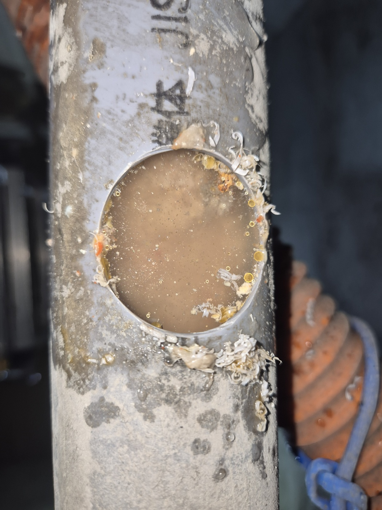

안녕하세요.. 고고고 설비입니다.. 이번에는 평택시 비전동 아파트 1층 세대에서 싱크대가 막혔다는 요청을 받고 출동한 현장입니다. 1층은 싱크대 배관이 바로 아래 지하 공간에 있는 피트랩 배관으로 이어지는 구조라서, 위층 현장과 달리 지하에서 작업해야 했어요.
먼저 싱크대 아래쪽으로 배관이 지나가는 공간을 살펴봤어요. 1층 세대는 배관이 바닥 밑으로 내려가기 때문에 막힘의 원인이 싱크대 안쪽이 아니라 그 아래 배관에 있는 경우가 많습니다.

내시경을 넣어서 배관 안쪽을 직접 확인했어요. 모니터에는 배관 벽면에 찌꺼기가 붙어 있고 이물질이 걸려 있는 모습이 보였습니다. 어디까지 쌓여 있는지 알아야 필요한 구간만 정확하게 작업할 수 있어요.

피트랩 쪽으로 이어지는 배관은 아파트 지하 천장을 따라 지나가고 있었어요. 지하 창문으로 들어오는 빛이 전부일 만큼 좁고 어두운 공간이라서 배관 위치를 정확하게 찾는 것부터 시작했습니다.

사다리를 세우고 올라가서 천장 배관을 작업했어요. 좁은 지하 계단 옆이라 자세가 불편했지만 배관을 열어야 막힌 오수를 확실하게 뺄 수 있어서 꼼꼼하게 진행했습니다.

배관에 점검용 구멍을 내서 안쪽을 열어보니 갈색의 탁한 오수가 가득 차 있었어요. 물이 빠져나가지 못하고 배관 안에 고여 있었던 거죠. 싱크대에서 물이 안 내려갔던 이유가 여기에 있었습니다.

작업을 마친 뒤 구멍 안쪽을 영상으로 다시 확인했어요. 처음처럼 오수가 가득 차 있지 않은 모습이 보입니다.
1층 세대는 위층과 달리 싱크대 배관이 지하 피트랩으로 이어지는 경우가 많아서, 싱크대 안쪽에서만 작업해서는 해결되지 않는 경우가 있어요. 싱크대 물 빠짐이 느려지거나 냄새가 올라온다면 지하 배관까지 같이 점검받아 보시는 걸 추천드립니다.
고고고 설비는 주택, 아파트, 원룸, 상가, 공장의 생활 하수 오수 배관을 관리해 주는 업체입니다. 고고고 설비에 전화 주시면 친절상담 정확한 진단 확실한 해결로 보답해 드리겠습니다!!